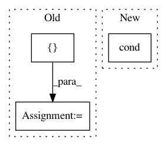

3a9405f581b7325df07b83c2891807d2b8b02dda,onnx_tf/handlers/backend/pad.py,Pad,_common,#Any#Any#,14
Before Change
if cls.SINCE_VERSION < 11: // for opset 1 and opset 2
paddings = node.attrs.pop("pads", None)
// tf requires int32 paddings
paddings = tf.constant(
np.transpose(
np.array(paddings).reshape([2, num_dim]).astype(np.int32)))
constant_values = node.attrs.pop("value", 0.)
else: // for opset 11
paddings = tensor_dict[node.inputs[1]]
After Change
constant_values = tensor_dict[node.inputs[2]] if len(
node.inputs) == 3 else 0
cond = tf.cond(check_positive(paddings),
lambda: process_pos_pads(x, paddings),
lambda: process_neg_pads(x, paddings))
return cond
@classmethod
def version_1(cls, node, **kwargs):
In pattern: SUPERPATTERN
Frequency: 4
Non-data size: 3
Instances
Project Name: onnx/onnx-tensorflow
Commit Name: 3a9405f581b7325df07b83c2891807d2b8b02dda
Time: 2020-06-26
Author: chhuang@us.ibm.com
File Name: onnx_tf/handlers/backend/pad.py
Class Name: Pad
Method Name: _common
Project Name: tensorflow/benchmarks
Commit Name: 237d138e6af68e7aed794c4797f07eab2fad4261
Time: 2018-10-01
Author: haoyuzhang@google.com
File Name: scripts/tf_cnn_benchmarks/models/ssd_model.py
Class Name: SSD300Model
Method Name: get_learning_rate
Project Name: nilearn/nilearn
Commit Name: d8590f94ae7afaec4a6228c93d4c688d57965f38
Time: 2013-09-02
Author: philippe.gervais@inria.fr
File Name: nilearn/_utils/testing.py
Class Name:
Method Name: generate_group_sparse_gaussian_graphs
Project Name: calico/basenji
Commit Name: 6b5e5027e4ebc7bb09df3520704f44edb929c86d
Time: 2018-08-12
Author: drk@calicolabs.com
File Name: basenji/augmentation.py
Class Name:
Method Name: augment_stochastic_rc